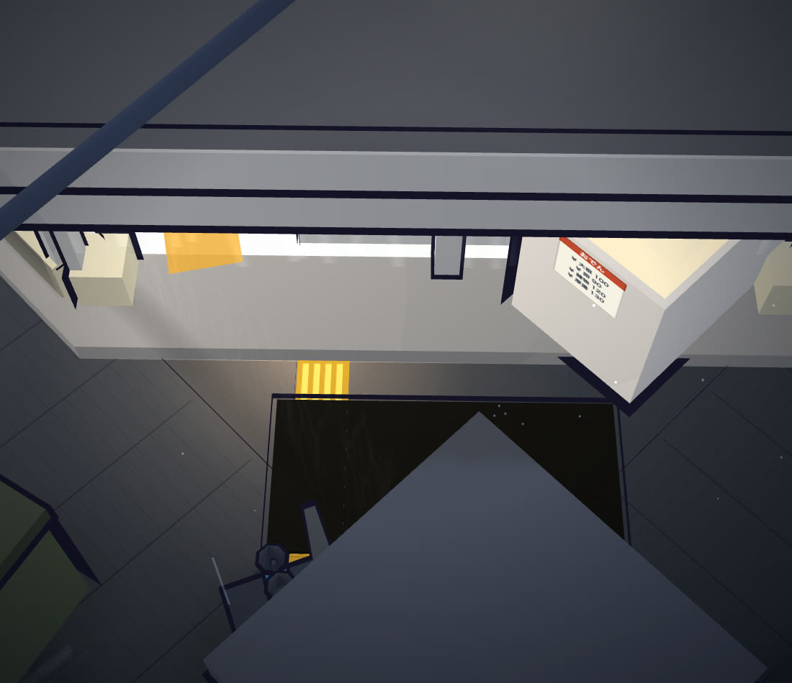
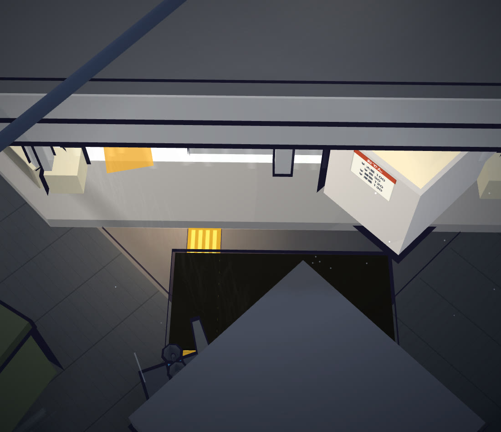
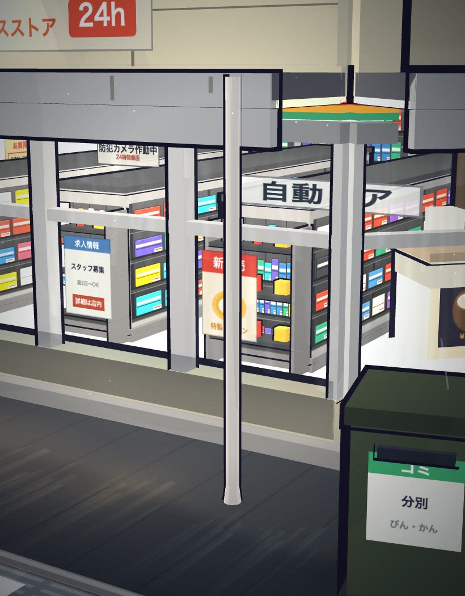
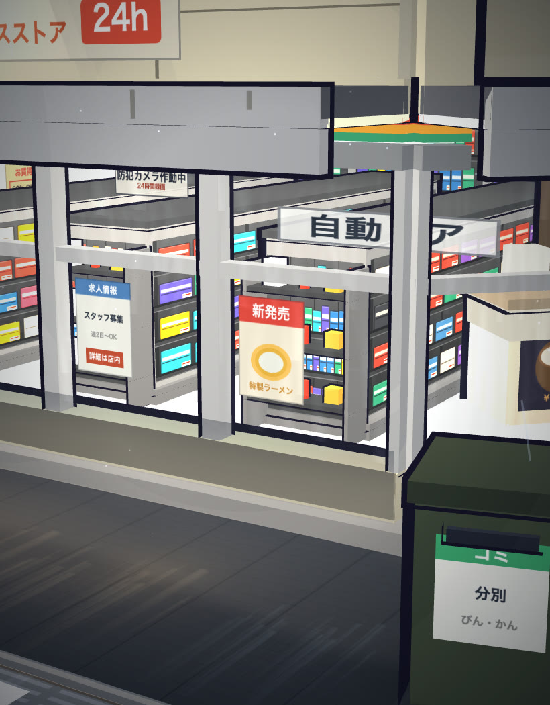
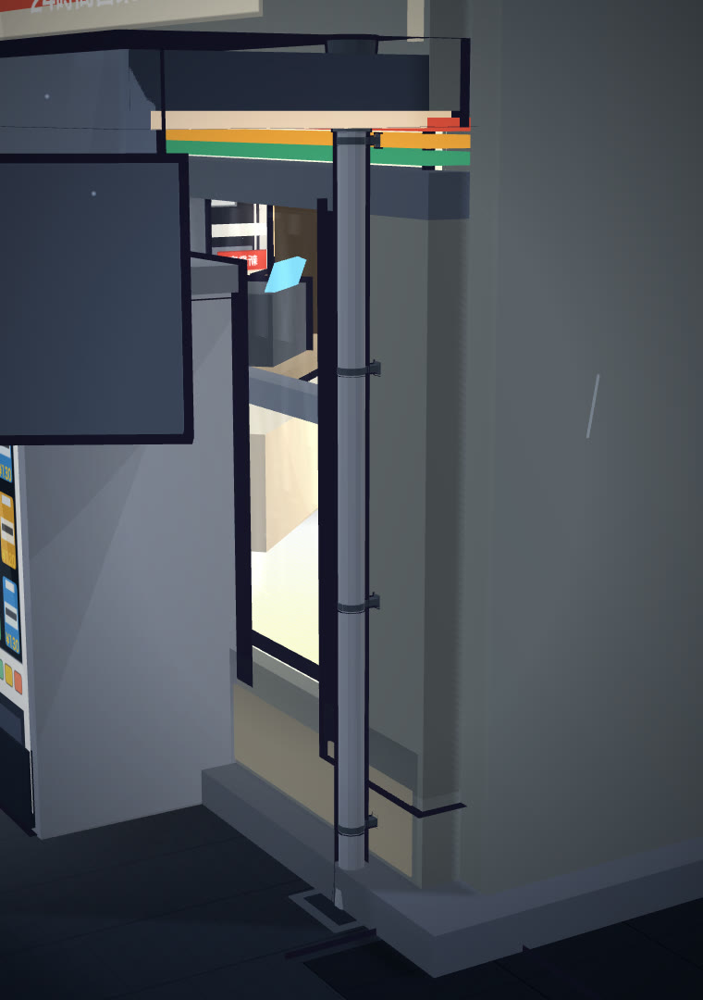
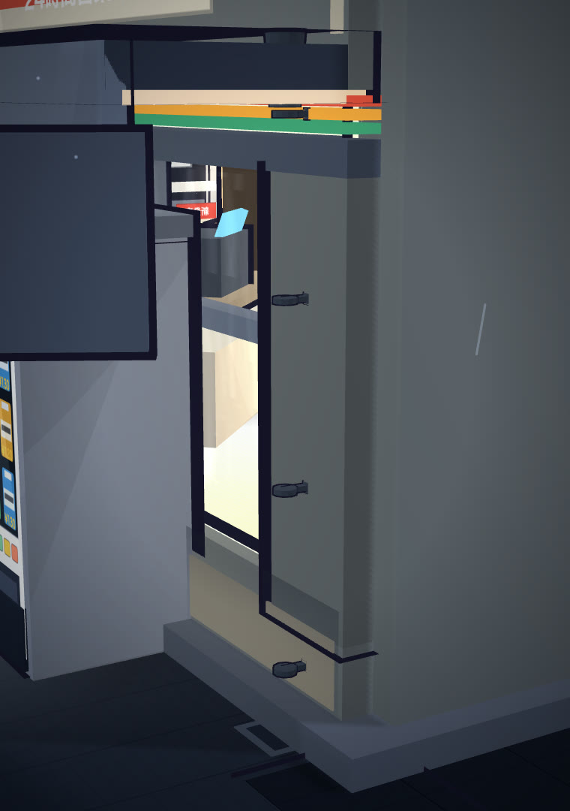
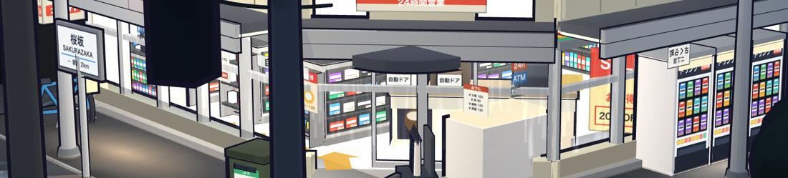
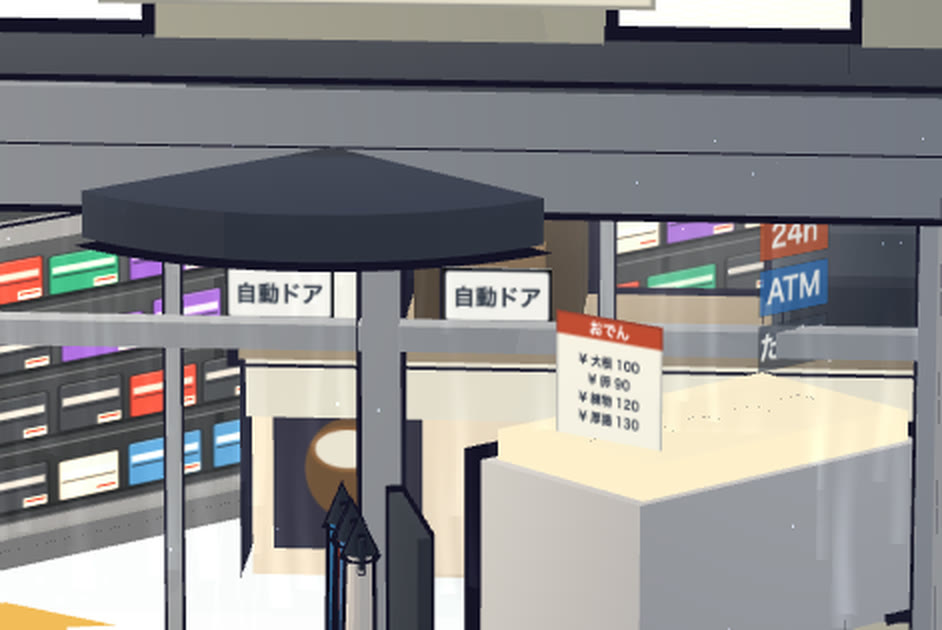
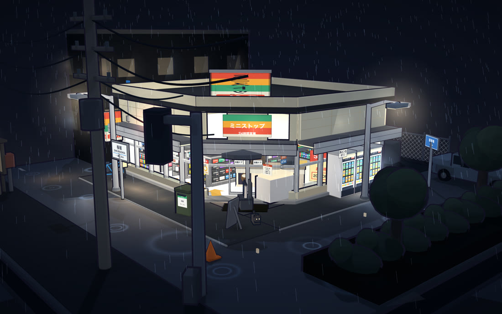
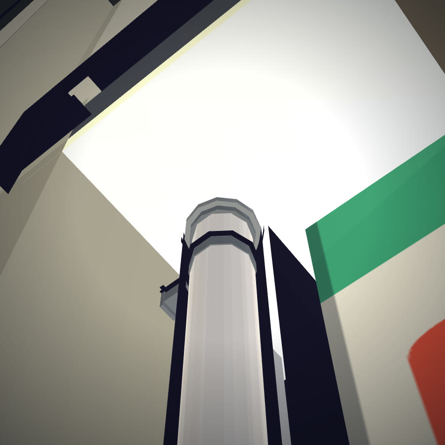

它是怎么被
一步步改出来的
How it was changed,
step by step
这座 945 KB 的雨夜便利店街角不是一次画成的。它过了 19 轮外部评审（r2–r20，双通道）， 其中两条看上去自洽的错误被评审当场抓出。这份报告讲的就是这个过程——不是结论，是抓错和改正的方法。 This 945 KB rainy-night corner wasn't drawn in one pass. It went through 19 rounds of external review (r2–r20, two channels), and two errors that looked self-consistent were caught in the act. This report is about that process — not the conclusions, but the method of catching and fixing.
先看一眼：它现在长什么样First, a look: what it is now
下面全部是浏览器里实时渲染的实截，不是合成画面。视频录自交互式场景本体； 静帧用诊断桥固定机位后拍摄，机位参数写在每张图下面。 Everything below is a real capture of the live render, not a composite. The video is recorded from the interactive artifact; stills are shot at fixed camera poses via the diagnostic bridge, with the pose printed under each frame.


静帧为 1600×1000 实时渲染实截（本页显示为压缩副本）。机位即源码 06_effects.js 中
ctrl 对象的 az / el / dist / target 四个参数。Observed
Stills are 1600×1000 real-render captures (compressed copies shown here). The pose is the
ctrl object's az / el / dist / target in 06_effects.js. Observed
两条看上去自洽的真错误Two errors that looked self-consistent
这是整份报告的主线。两条错误当时都能自圆其说，所以人手 review 抓不到—— 只有把每条声明拿去和源码、和算术对质，才会露。 The main line of this report. Both errors were internally consistent when written, which is why human review missed them — only confronting each claim with the source code and with arithmetic exposed them.
「玻璃带占立面总高 65%」——这个数是我们编的"The glass band is 65% of the facade" — a fabricated number
「★ 玻璃带占立面总高的 65%。这一条不能妥协：……」
「★ 窗下墙体（腰壁）不要超过 0.65 m。本项目取腰壁顶 0.45 m（在 0.65 以内）……（我犯的错是把 0.65 m 抄成了 65%——单位从长度变成了比例）」
| 谁抓到的Caught by | r19：GPT 通道与 Kimi 通道独立指出同一处（「从你给的 ▸ 数字推不出 65%」）r19: the GPT and Kimi channels pointed it out independently ("65% cannot be derived from the ▸ numbers you gave") |
| 为什么人手没抓到Why humans missed it | 65% 能被反向验算、符合「腰壁做高了吃掉室内」的直觉——声明内部自洽65% back-checks and matches the intuition that a tall sill wall eats the interior — the claim was internally consistent |
| 改了什么What changed | v4 ㉔ 改为「腰壁 ≤ 0.65 m（长度，不是比例）」；三道闸门（numbering / sync / regression）PASSv4 ㉔ rewritten as "sill wall ≤ 0.65 m (a length, not a ratio)"; all three gates PASS |
| 教训Lesson | 单位腐化：每个数字先问「这是长度、比例还是计数？」Unit corruption: ask of every number first — length, ratio, or count? |
「店内灯被货架端头挡住」——机制是错的"Interior lamps are blocked by shelf end-caps" — wrong mechanism
「单排灯被货架端头挡住」——把光照问题归因成遮挡问题
「源码自己写着 "so nothing occludes them"——真实原因是旧灯装在 y 0.6–1.2，低于货架顶 1.49 m，灯被埋在货架体内。改的是高度，不是阴影。」
| 谁抓到的Caught by | r19：GPT 通道指出机制不兼容（「不投影的点光源不会因为两者之间有货架而自动被遮挡」）+ 本机源码复核r19: the GPT channel flagged the incompatible mechanism, verified locally against the source |
| 为什么人手没抓到Why humans missed it | 「灯不够亮」和「灯被挡住」在现场看是一样的，遮挡因果符合直觉"Dim lamps" and "blocked lamps" look identical on screen; the occlusion story matches intuition |
| 改了什么What changed | 提示词改为灯装高 2.2 m「必须高于货架顶 1.49 m」；场景中灯抬到 y = 2.20The prompt now mandates lamp height 2.2 m above the 1.49 m shelf top; the scene's lamps were raised to y = 2.20 |
| 教训Lesson | 因果机制检查：先确认病因再改——同一种画面症状可以有完全相反的修法Causal-mechanism check: confirm the cause first — identical symptoms can need opposite fixes |
19 轮评审：前半程修画面，后半程修流程19 rounds: the first half fixes the picture, the second half fixes the process
r2–r12 在修画面（从「暖光透不出」追到视线几何、再追到测量工具本身在说谎）； r13–r20 把这套流程本身变成被评审对象，并沉淀成两个 skill。 r2–r12 fix the picture (from "the warmth won't come through" to sight-line geometry, to the measuring tool itself lying); r13–r20 turn the process into the object of review, and condense it into two skills.
gated-verification skill（七闸门 + 七档判决词）。两通道分评协议与可用性。The process condenses into the gated-verification skill (seven gates, seven verdict words). Channels split: protocol vs usability.② 通道披露：GPT 通道 = 本机 Codex CLI（gpt-6-astra）；Kimi 通道 CLI 名为 k3，但端点上报的实际模型是 K2.8 Preview（r4 / r15 / r16 起档案明确声明「不作 K3 结论引用」）；r5 / r18 / r19 / r20 另有 Codex 第三通道。Observed
③ 完整逐轮表（含每轮 brief 核心问题与两通道结论）见项目档案
deliverables/3d/konbini-review-2026-10-08/；本页只标转折轮与分歧轮。
① Review volume (19 rounds × 2–3 channels) is presented only as the source of the error
discoveries, never as evidence of artifact quality — self-built, self-reviewed, same ecosystem.Inferred② Channel disclosure: the GPT channel = local Codex CLI (gpt-6-astra); the Kimi channel's CLI is named k3 but the endpoint reports K2.8 Preview (from r4/r15/r16 the archive states "not cited as K3 conclusions"); r5/r18/r19/r20 additionally had a Codex third channel.Observed
③ The full round-by-round table lives in the project archive
deliverables/3d/konbini-review-2026-10-08/;
this page marks only turning points and divergences.
从 198 行到 1,035 行：判断变成可移交规格From 198 to 1,035 lines: judgement becomes a transferable spec
提示词不是先写的——它从产物反推而来，所以每条都能指回源码。四轮迭代把 「灯要亮一点」这类只能意会的判断，拆成 77 条带分级的条款。 The prompt wasn't written first — it was reverse-derived from the artifact, so every clause points back to source. Four iterations split "make the lamps brighter" into 77 graded clauses.
行数为 wc -l 实测Observed；v1 / v4 字节数取自 README 与仓库文件Observed。
行数增长不证明质量提升——v4 比 v3 长的原因之一是补上了 v3 缺失的单位、归一化与推导（r19 三通道指出）。
Line counts measured with wc -lObserved; v1/v4 byte sizes from the README and repo filesObserved.
Line-count growth does not prove quality — part of why v4 is longer is that it restores the units,
normalisation and derivations v3 lacked (flagged by all three channels in r19).
一条条款的转化样本（错误 ① 那条）One clause's translation (the error-① clause)
转化发生在三层：有数字 → 有单位 → 有推导。v3 停在第一层且数字是编的； v4 补上「长度不是比例」、项目取值 0.45 m 与俯角几何（每厘米腰壁遮 2.7 cm 室内的来历）。 The translation has three layers: a number → a unit → a derivation. v3 stopped at the first layer with a fabricated number; v4 restores "a length, not a ratio", the project value 0.45 m, and the elevation geometry (where "each cm of sill wall hides 2.7 cm of interior" comes from).
规则三级分级（v4 新增，三通道一致要求）Three-tier rule grading (new in v4, required by all three channels)
| 级别Tier | 含义Meaning | 改的代价Cost of changing |
|---|---|---|
| Invariant | 视觉关系不可破坏。本项目共 5 条：玻璃带占立面大部分高度（腰壁 ≤ 0.65 m 长度约束）/ 最亮的人造物是店面 / 暖色稀缺 / 明暗交界是硬边 / 痕迹各有成因Visual relations that must hold. Five here: glass band dominates the facade / the store is the brightest artificial thing / warm colour is scarce / light-dark edges are hard / every mark has a cause | 改了就换了一类东西You've changed the category |
| Recipe | 本项目验证有效的推荐做法（如货架排面 512×256 / 4 行 / 28–46 px）Practices this project validated (e.g. shelf facings 512×256 / 4 rows / 28–46 px) | 可换，但须证明仍属同类Swappable, but prove it's still the same class |
| Implementation | 具体代码 / 数值（如色阶灰阶 86/146/206/255）Concrete code / values (e.g. ramp greys 86/146/206/255) | 原则上可整个替换Replaceable in principle |
出处：prompt/konbini-3d-prompt-v4.md §18。Observed
这个分级存在的意义：让读者知道哪些必须照抄、哪些该重新推导——v1 的一句话原意是「同类关系不能变」，评审指出这个二分不够。
Source: prompt/konbini-3d-prompt-v4.md §18.Observed
The point of the grading: readers know what must be copied and what must be re-derived — v1's original
wording was a vague binary ("same-class relations must hold"), which the review found insufficient.
同一机位，开关一个构件：差异必须实测Same pose, toggle one part: the difference must be measured
这些是现版本的开关对照（成品证据，不是过程图）。每对的差异区域由差分运算实测标出—— 不是「我觉得变了」，是「这些像素变了」。 These are current-version toggle comparisons (artifact evidence, not process shots). Each pair's difference region is measured by image differencing — not "I feel it changed", but "these pixels changed".

ON
OFF
ON
OFF
ON
OFF当时的样子：过程图，不是成品图How it looked then: process shots, not the artifact
这几张来自评审档案的 renders/ 目录，拍摄于 r3 / r4 / r19 轮次期间。
它们不是当前成品——每张带红色压印条。保留它们是因为：结论会被覆盖，当时的画面不会。
These come from the review archive's renders/ directory, shot during rounds
r3 / r4 / r19. They are not the current artifact — each carries a red stamp bar. They're kept
because conclusions get overwritten; the frames of the moment don't.

r3 历史过程 · 非当前成品PROCESS · NOT CURRENT
r4 历史过程 · 非当前成品PROCESS · NOT CURRENT
r4 历史过程 · 非当前成品PROCESS · NOT CURRENT
r19 历史过程 · 非当前成品PROCESS · NOT CURRENT轮次编号即当时的版本标识；精确拍摄日期档案未逐图记录Unknown。 档案缺口如实列在 §7。r5–r12、r14–r16 无对应截图（档案 renders/ 目录只覆盖部分轮次）。 The round number is the version marker of the time; exact capture dates were not recorded per imageUnknown. Archive gaps are listed honestly in §7. Rounds r5–r12 and r14–r16 have no corresponding screenshots (the archive's renders/ covers only some rounds).
过程留下的东西，和没做到的事What the process left behind — and what it didn't achieve
沉淀 ① gated-verification skillSediment ① · gated-verification skill
r13 落盘：七道闸门 + 七档判决词 + 两个脚本 + 两个病历。 核心主张：没红过的探针只是装饰——每道闸门都必须做过「该红时真红」的反证。 Landed in r13: seven gates, seven verdict words, two scripts, two case files. Core claim: a probe that has never gone red is decoration — every gate must have been counterfactually proven to fail when it should.
沉淀 ② prompt-selfcheck skillSediment ② · prompt-selfcheck skill
r20 落盘：三道机器闸门（编号断裂 / 副本不同步 / 旧错复活）+ 19 项自动反证，零第三方依赖。 两通道一致判定：尚不具备公开发布条件（退出码契约是破的）——这条判定原样保留。 Landed in r20: three machine gates (numbering breaks / desynchronised copies / resurrected errors) plus 19 automated counterfactuals, zero dependencies. Both channels ruled: not yet fit to publish (the exit-code contract is broken) — that verdict is kept verbatim.
档案缺口（不假装）Archive gaps (not pretending)
| 缺口Gap | 状态Status |
|---|---|
| r5–r12、r14–r16 无独立 findings / 截图归档，改动只能从下一轮 brief 回溯No independent findings / screenshots archived for r5–r12, r14–r16; changes traceable only via the next round's brief | Unknown |
| r1 未独立编号，根目录 brief/answer 的轮次归属无法确认r1 was never numbered; round attribution of the root brief/answer files is unconfirmed | Unknown |
| r6 GPT 通道首跑空输出，实际使用重跑产物The r6 GPT channel's first run was empty; the rerun artifact was used | Observed |
| 色带「厚 0.28」疑似 0.028 的量纲错误，未核实，列开放项Colour band "thickness 0.28" suspected to be a 0.028 unit error; unverified, kept as an open item | Unknown |
| 帧率 / 加载耗时未测；仓库无自动化浏览器测试Frame rate / load time unmeasured; no automated browser test in the repo | Unknown |
| 仓库无 LICENSE 文件——方法论可参考，代码复制需授权No LICENSE file — methodology referenceable, code copying needs permission | Observed |